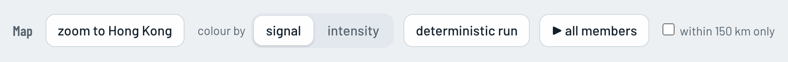

- 1
Pick a storm and a run
Choose the year, then the storm, then the run. A run is named after the time its forecast started, in UTC. Latest runs holds the newest forecasts.
The buttons below switch between ECMWF's physics model (IFS) and its AI model (AIFS). Older years use ECMWF's archived forecasts (2008–2023) or Pangu-Weather (2018–2022).

- 2
Read the answer
ECMWF runs each forecast about 50 times. The page calls each version a member. The big number is the highest signal that most members reach, with when it starts and ends in Hong Kong time.
Below it you see how many of HKO's eight reference stations get gale, storm or hurricane winds. For a past storm, HKO's own record sits next to it.
Here 37 of 50 members give No. 10, for about 8 hours. HKO kept No. 10 up for 11 hours.

- 3
See when each signal is up
Each bar covers one signal, in Hong Kong time. The solid part runs from the members' middle start to their middle end. The pale part spans the earliest 10% to the latest 90%.
The thin line is the deterministic run, ECMWF's single main forecast. HKO's real signals run along the top.

- 4
Every line is one member
Each line is one member's storm track, coloured by the highest signal it gives Hong Kong: No. 3, No. 8 or No. 10.
Pink means near No. 10. It is not expected, but a track 50 km off or a slightly stronger storm would bring it. The dashed black line is where the storm really went, and the circles mark distances from Hong Kong.

- 5
Switch to storm strength
The map's own buttons sit right above it. colour by intensity paints each stretch of track by HKO's storm class, from tropical depression in black to super typhoon in purple.


- 6
Watch all members move
▶ all members moves every member's storm forward together, 12 forecast hours a second. The large black dot is the deterministic run.
You can watch the spread grow, and see whether it closes on Hong Kong.
- 7
Follow one member
Click any line to see that member alone. Its four rings show how far strong, gale, storm and hurricane winds reach on the side facing Hong Kong.
The player under the map steps through the hours. ← back to all members, under the player, brings everyone back.


- 8
Zoom in on the eight stations
zoom to Hong Kong shows HKO's eight reference stations. Each dot is coloured by the station's expected wind, with its Beaufort force next to the name.
In this run Cheung Chau reaches F12.

- 9
Compare each station with HKO
The Station guide tab under the map lists each station's chance of gale (63 km/h), storm force (88 km/h) and hurricane force (118 km/h), with a rough expected wind.
For past storms it adds what HKO recorded and the difference. Red means the forecast was too low, green too high.

- 10
Check how good it is
Every run links to Compared with HKO, next to the forecast buttons. There each dot is one storm at one time, set against what HKO recorded, and the storm you are viewing is red.
Across ECMWF's 2025 physics forecasts, Ragasa's strength came out about 5 kt too low on average.
How good is it? has the full record, signal by signal and station by station.

37 of 50 forecasts gave No. 10 for Ragasa, more than two days before HKO raised it.
ECMWF runs each forecast about 50 times with small changes. This site turns every version into Hong Kong signal chances. The tour below reads one real forecast, from 21 September 2025, the way the page shows it.
Ragasa was not used to set up the site, so it is a fair test.